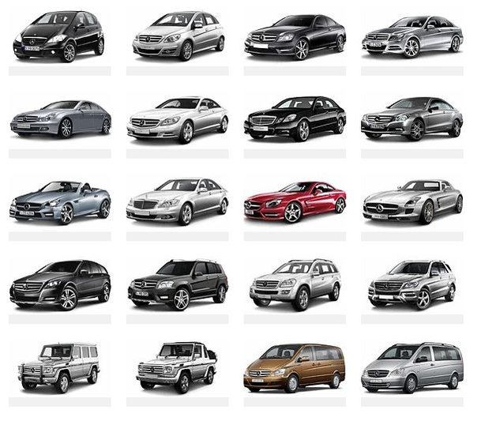

Торговая марка и одноимённая компания — производитель легковых автомобилей премиального класса, грузовых автомобилей, автобусов и других транспортных средств, входящая в состав немецкого концерна «Daimler AG». Является одним из самых узнаваемых автомобильных брендов во всём мире[5]. Штаб-квартира Mercedes-Benz находится в Штутгарте, Баден-Вюртемберг, Германия. Наименование торговой марки было принято в 1926 году[6] в результате слияния двух конкурирующих фирм, Benz & Cie. (основана Карлом Бенцем) и Daimler-Motoren-Gesellschaft (основана Готлибом Даймлером), в единый концерн — Daimler-Benz. Название бренда образовано от двух наиболее значимых автомобилей объединённых компаний — Mercedes 1901 года и Benz Patent-Motorwagen 1886 года.
В 2018 году бренд Mercedes-Benz оценивался в 48,601 млрд долларов, удерживая второе место (после Toyota) среди компаний-производителей автомобилей и восьмое место среди всех брендов мира[5]. По оценке BrandZ, в 2018 году марка входила в список Top 100 Most Valuable Global Brands, где занимала 46 место среди наиболее дорогих брендов со стоимостью в 25,684 млрд долларов[7]. В 2019 году бренд Mercedes-Benz оценивался в 60,355 млрд долларов, тем самым занимая первое место в рейтинге компаний-производителей автомобилей[8].
Модельный ряд
- А-класс хэтчбек/седан
- B-класс семейный/субкомпактвэн
- C-класс седан/купе/универсал/кабриолет
- CLA-класс компактный седан/универсал
- CLS-класс четырёхдверное купе/универсал
- E-класс бизнес-седан/купе/универсал/кабриолет
- G-класс внедорожник
- GLA-класс кросс-хэтч
- GLC-класс кроссовер/кросс-купе (ранее GLK-класс)
- GLE-класс среднеразмерный кроссовер/кросс-купе (ранее M-класс)
- GLS-класс полноразмерный кроссовер (ранее GL-класс)
- R-класс кросс-универсал (2006-2015
- S-класс премиум-седан/купе/кабриолет/Maybach
- SL-класс родстер
- SLC-класс компактный родстер (ранее — SLK-класс)
- SLS AMG суперкар 2010-2013
- Mercedes-AMG GT суперкар
- Mercedes-AMG GT 63S 4-дв. версия AMG GT
- V-класс фургон/минивэн
Значимые автомобили
- 1928: Mercedes-Benz SSK — легендарный гоночный автомобил
- 1930: 770 «Grosser Mercedes» — торжественный и церемониальный автомобиль
- 1934: 500 K
- 1936: 260 D — первый дизельный автомобиль в мире
- 1938: W125 Rekordwagen — победитель рекордов скорости
- 1939: Mercedes-Benz T80 — должен был установить рекорд скорости на земле
- 1953: модели «Ponton»
- 1954: 300SL «Gullwing»
- 1959: «Fintail» модели
- 1960: 220SE Кабриолет
- 1963: 600 «Grand Mercedes» — один из самых престижных лимузинов XX века
- 1963: Mercedes-Benz 230SL "Pagoda"
- 1965: Mercedes-Benz S-класс
- 1966: 300SEL 6.3
- 1969: Mercedes-Benz C111 — экспериментальный автомобиль
- 1972: Mercedes-Benz W107 350SL
- 1974: 450SEL 6.9
- 1974: 240D
- 1975: 280
- 1976: 300D
- 1979: 500SEL и появление внедорожников G-класса
- 1983: 190E 2.3-16 — спортивный автомобиль для участия в гонках DTM
- 1984: W124
- 1990: W124 500E — результат совместной работы Daimler AG и Porsche
- 1991: 600SEL
- 1993: появление C-класса
- 1995: Mercedes-Benz C43 AMG — первый автомобиль, тюнингованный AMG в Аффальтербах после слияния компаний в 1998 году
- 1995: Mercedes-Benz SL73 AMG — самый большой двигатель Mercedes-Benz, 7,3 л V12
- 1996: Mercedes-Benz SL60 AMG — очень редкий 6,0 л. V8, 408 л. с.
- 1996: Mercedes-Benz RENNtech E7.4RS — самый быстрый дорожный седан конца 1990-х годов
- 1996: Mercedes-Benz CL-класс купе 1996-2013
- 1997: Mercedes-Benz M-класс
- 1998: Mercedes-Benz CLK GTR
- 2004: Mercedes-Benz CLK DTM AMG
- 2004: Mercedes-Benz SLR McLaren — суперкар, появившийся в результате сотрудничества Mercedes-Benz и McLaren Automotive
- 2004: Mercedes-Benz CLS
- 2007: W211 E320, GL320 Bluetec, ML320 Bluetec, R320 Bluetec — первая серийная экологическая и топливно-эффективная дизельная версия W211
- 2008: Mercedes-Benz CLC-класс лифтбэк 2008-2010
- 2010: Mercedes-Benz SLS AMG
- 2013: Mercedes-Benz CLA-класс
- 2016: Mercedes-AMG GT
- 2017—2018 Mercedes-Benz E-Class седан 2017 — модель E 400 (электрокар) топливной версии не существует.
- 2019: Mercedes-Benz EQ Silver Arrow 01 — первый гоночный болид для участия в гонках «Формула Е».
История
Benz & Cie.
1 октября 1883 Карл Бенц основал компанию «Бенц и Ко. Райнише Газмоторен-Фабрик, Манхайм» (Benz & Cie.) в форме открытого торгового общества вместе с бизнесменом Максом Каспаром Розе и коммерсантом Фридрихом Вильгельмом Эсслингером. В 1886 году предприятием была создана первая трёхколёсная самоходная повозка с бензиновым двигателем. В этом же году 29 января её создатель — Карл Бенц — получил патент DRP No. 37435 на это изобретение[9]). Впоследствии трёхколёсный автомобиль был запущен в серийное производство. В 1893 году Карл Бенц получил патент DRP No. 73515 для двойного стержня управления и инициировал выпуск четырёхколёсных автомобилей «Виктория» с двигателем мощностью 3 л. с.[10], скорость которых составляла 17-20 км/ч. За первый год было продано 45 таких автомобилей. В 1894 году компания начала выпуск автомобилей модели «Velo», которые участвовали в первых автомобильных гонках Париж — Руан. В 1895 году был создан первый грузовик, а также первые в истории автобусы[11]. Через год, в 1896 году, фирма Benz & Cie. разработала первый цилиндр для двигателей, которые Бенц назвал «contra engine», поскольку цилиндры были установлены противоположно друг другу[12]. В 1901 году, вскоре после выпуска Даймлером новой модели «Mercedes 35 PS», становится понятно, насколько фирма отстаёт от прогресса. С целью улучшения положения акционеры приглашают в компанию французского инженера Мариуса Барбару[13]. Из-за технических разногласий Карл Бенц покинул собственную компанию. Вскоре стало ясно, что французский конструктор не оправдывает возложенных на него надежд. Следуя логике, что немецкие автомобили должны делаться немцами, в фирму на должность главного инженера приглашён Фриц Эрле. Эта идея также оказалось неудачной. Только с приходом в компанию талантливого инженера Ганса Нибеля дела постепенно начали идти в гору. В 1909 году, создав целый ряд успешных легковых автомобилей, фирма построила самый известный гоночный автомобиль того времени «Блитцен Бенц» с двигателем мощностью в 200 лошадиных сил и рабочим объёмом 21 594 см³[14]. В послевоенные годы было создано множество новых моделей, большинство из которых с успехом выпускались до середины двадцатых годов. Всего с момента начала производства в 1886 году и до объединения с «Даймлер-Моторен-Гезелльшафт» в 1926 году, фирма «Бенц и Ко.» произвела 47 555 транспортных средств, включая легковые автомобили, грузовики и омнибусы.
SL (Sport Leicht)
Одновременно с производством легковых автомобилей фирма уделяла немало внимания восстановлению гоночной репутации. Целое бюро занималось созданием лёгких аэродинамических кузовов. Особым успехом стал автомобиль Mercedes-Benz W196, на котором аргентинский гонщик Хуан-Мануэль Фанхио выиграл чемпионаты Формулы 1 в 1954 и 1955 годах (см. команда Мерседес в формуле 1)[30][31]. Сам автомобиль построен на основе опыта бывших конструкторов авиадвигателей истребителя Messerschmitt Bf.109 и имел систему впрыска топлива и десмодромный привод клапанов. В 1955 году улучшенная версия автомобиля — Mercedes-Benz W196S (300SLR) под номером 722, за рулём которой сидел знаменитый английский гонщик Стирлинг Мосс, установила не побитый по сей день рекорд гонки Милле Милья. Несмотря на трагический исход гонки 24 часа Ле-Мана, в которой погибли Пьер Левег и 82 зрителя, команда Mercedes-Benz выиграла чемпионат мира в 1955 году. Однако после этого марка ушла из гоночного мира на многие годы. Но успех не мог остаться без последствий. Ещё в 1952 году появилась гоночная модель Mercedes-Benz W194, предшественница SLR, которая смогла финишировать на втором и четвёртом местах в Милле Милья этого же года, а также участвовала в гонках Carrera Panamericana и Targa Florio. Кузов автомобиля состоял из трубчатой рамы, покрытой листами, сделанными из лёгкого запатентованного алюминиевого сплава и имел облегчённый и переделанный вариант шестицилиндрового двигателя от «аденауэра». Самыми интересными элементами конструкции выступали форма кабины и дверей, которые, для обеспечения прочности и уменьшения веса, открывались вверх. Они и дали автомобилю прозвище «крыло чайки». В 1953 году бизнесмен Макс Хоффман предложил фирме Mercedes-Benz создать дорожную версию W194 для развивающегося американского рынка. Результатом стал Mercedes-Benz W198 (300SL). С момента премьеры в 1954 году его футуристические черты и необычные двери гарантировали модели полный успех. Элита США, куда поставлялись более 80 % всех автомобилей, раскупала их на аукционах. Изначально на автомобили устанавливался двигатель с системой из трёх карбюраторов типа Weber, развивавший мощность в 115 л. с., однако вскоре компания заменила их на систему впрыска топлива фирмы Bosch, что повысило мощность до 215 л. с. и позволило увеличить максимальную скорость до 250 км/ч. Успех автомобиля 300SL шокировал саму фирму. Однако при всех его плюсах сложная конструкция и долгая сборка делали его стоимость недоступной для старого света. Чувствуя потенциал открывшегося для марки рынка, инженеры Mercedes-Benz сразу принялись разрабатывать массовую модель на базе стандартного «понтона» Mercedes-Benz 190 (W121). При этом автомобиль сохранил многое от 300SL — независимую переднюю подвеску и заднюю подвеску с качающимися полуосями. В апреле 1954 года состоялась премьера «младшего брата» 190SL. Автомобиль выпускался как родстер, либо со съёмной жёсткой крышей, либо со складывающейся брезентовой. Цена на него была почти в два раза меньше, чем у 300SL. Автомобиль оказался очень успешным, особенно среди женщин. В 1957 году 300SL подвергся крупной модернизации, в ходе которой он лишился своей уникальной конструкции дверей-крыльев. Причин этому было несколько: во-первых, автомобиль был скорее гоночным, нежели класса Гран-Туризмо, в который он неожиданно перешёл. Следовательно, в плане удобства имел большие недостатки, такие как отсутствие багажника, слабую вентиляцию (только за счёт задних треугольных форточек, которые могли приоткрыться) и вход и выход пассажиров в салон, который был очень неудобен, особенно для женщин. Ещё одной причиной стала высокая смертность в авариях, вследствие того, что пассажирам трудно выбраться из автомобиля, особенно при его перевороте. Поэтому в 1957 году появился новый 300SL, который превратился в родстер, аналогично 190SL и выпускался как с брезентовой, так и со съёмной жёсткой крышей. При этом автомобиль получил новую, более комфортабельную заднюю подвеску, дисковые тормоза (с 1961 года) и, впервые для Mercedes-Benz, на него поставили новый тип вертикальных фар, которые вскоре станут характерной чертой всех последующих моделей марки вплоть до начала 1970-х годов. В 1963 году завершился выпуск обоих автомобилей. Всего было выпущено 1400 автомобилей 300SL первого поколения и 1858 второго. «Понтонных» 190SL построено 25 881. Оба автомобиля открыли для марки совершенно новый класс машин, которые отныне имели окончание SL — Sport Leicht — спортивно-лёгкий.